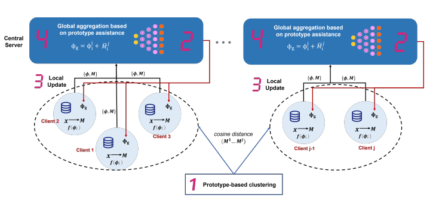

 |
An Efficient Prototype-Assisted Clustered Federated Learning Framework for Industrial Internet of Things
Fuyao Zhang, Dan Wang, Yalan Jiang IEEE International Conference on Information, Communication, and Network (ICICN), 2023 The first tutorial paper to explain various applications of diffusion models and coding examples. Paper | |